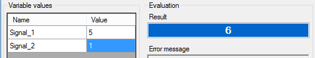
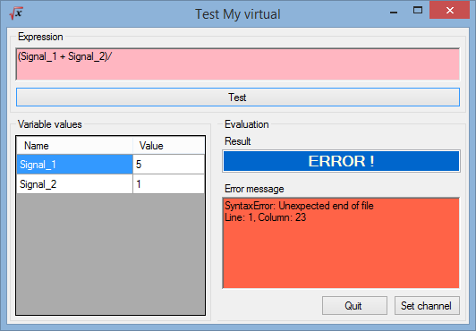

While writing the virtual channel expression, it is possible to test it by simulating a computation. To do so,  button of the virtual channel properties panel.
button of the virtual channel properties panel.

On the form opening, the virtual channel expression is evaluated using default values for expression variables.
The evaluation result is shown the 'Result' text box of the 'Evaluation' panel. The 'Variable values' grid, on the left, contains all variables of the virtual channel to test.
Change values in the grid to make a new calculation and verify the expression with different values.

The mathematical expression itself can be modified. Simply change the expression written in the 'Expression' text box and click the 'Test' button to evaluate the modified expression.

If the modified expression is mathematically correct, 'Expression' text box goes green. If an error occurs
during the evaluation, text box goes red.
In order to easily identify the error, the 'Error message' text box indicated what is the error and where it is.

Once the expression is working, click on the 'Set channel' button to set the test expression in the 'Expression' text box of the virtual channel properties panel.
Created with the Personal Edition of HelpNDoc: Easily create Help documents